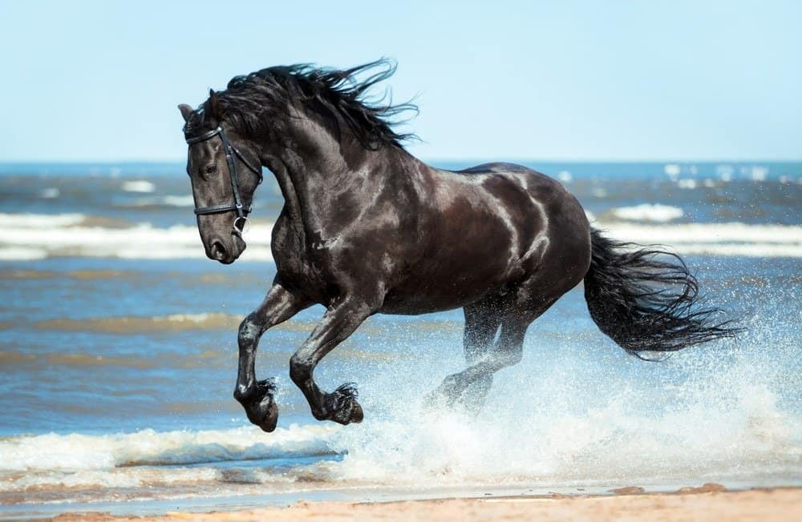

Aktiiviset ratsut
Active horses

Takku tuli suomeen 2017 syksyllä 10 kk iässä. Hän kasvoi hitaasti ja se otettiin huomioon koulutuksessa. Nyt meillä on luotettava, jokaiselle ratsastajalle sopiva ratsu, joka osaa toimia aloittelijoiden kanssa ja taitavammalla ratsastajalla suorittaa tasaisesti HeA ja 90–100 cm tasolla.
Takku arrived in Finland in autumn 2017 at 10 months of age. He grew slowly and that was taken into account in his training. Today he is a reliable mount suitable for every rider, capable of working with beginners while performing consistently at HeA and 90–100 cm level with a more experienced rider.
Itse olen kilpaillut Takulla seuratasolla HeB–HeA mukavilla tuloksilla. Esteillä olemme kilpailleet 80 cm tasolla useita puhtaita ratoja. Oppilaita Takku on opettanut kilpailuiden saloihin ja nostanut heidän tasoa 40 cm → 80 cm.
I have competed with Takku at club level in HeB–HeA with pleasing results. In show jumping we have competed at 80 cm level with multiple clear rounds. Takku has introduced students to the world of competition and raised their level from 40 cm to 80 cm.

Beso saapui 2-vuotiaana Espanjasta Suomeen kesällä 2021. Beso sai kasvaa rauhassa ja opetella elämää. Rotunsa puolesta hyvin herkkä Beso on opettanut minulle aivan erilaista lähestymistapaa koulutukseen ja tuonut uusia näkökulmia "työkalupakkiin".
Beso arrived from Spain as a 2-year-old in summer 2021. He was given time to grow and learn about life. Highly sensitive by breed, Beso has taught me a completely different approach to training and brought new perspectives to the toolbox.
Tällä hetkellä Beso kilpailee omalla tasollaan vielä hieman kisatilanteita harjoitellen, mutta osoittaa jo paljon potentiaalia.
Beso is currently competing at his own level, still practising competition situations, but already showing great potential.

Elvis muutti pihaan 3-vuotiaana keväällä 2020 seuraponi-tehtävään. Alkuun hänen tehtäviinsä kuului vain seuran pitäminen ja pari kertaa viikossa kärryttely. Myöhemmin hän on toiminut täydellisenä talutus- ja rapsutteluponina sekä ratsuna napakoille, hieman kokeneemmille ratsastajille.
Elvis joined the stable as a 3-year-old in spring 2020 as a companion pony. Initially his job was simply to provide company and a couple of carriage sessions per week. He has since become the perfect leading and petting pony, as well as a mount for more experienced compact riders.